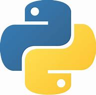

Jak se naučit programovat v Pythonu?
Co je potřeba???
- Počítač
- umět s počítačem
- trpělivost
- hodně nervů

duležité kroky
- Stejně jako u učení jakéhokoli jazyka, i při učení Pythonu je důležité začít od základů. To zahrnuje pochopení syntaxe Pythonu, datových typů, proměnných, smyček, funkcí a tříd
- Praxe je klíčem k učení Pythonu nebo jakéhokoli programovacího jazyka. Jakmile se seznámíte se základy, začněte psát kód. Zkuste pracovat na malých projektech nebo úlohách, které vás zaujmou
- Python je velmi všestranný jazyk, který se používá v mnoha oblastech. Jednou z cest, jak se v Pythonu zlepšit, je vybrat si specializaci a soustředit se na ni. To může být například datová analýza, webový vývoj, strojové učení nebo automatizace. Každá z těchto oblastí vyžaduje specifické knihovny a nástroje, které budete muset naučit.
- Jedním z nejlepších způsobů, jak si osvojit Python, je pracovat na reálných projektech. To může zahrnovat tvorbu webové aplikace, psaní skriptů pro automatizaci úloh, vytváření modelů pro strojové učení nebo analýzu dat.
- Python je stále se vyvíjející jazyk, a proto je důležité zůstat v obraze o nejnovějších trendech a nejlepších praktikách. To může zahrnovat sledování blogů, čtení dokumentace, účast na konferencích nebo sledování komunity Pythonu na sociálních médiích.